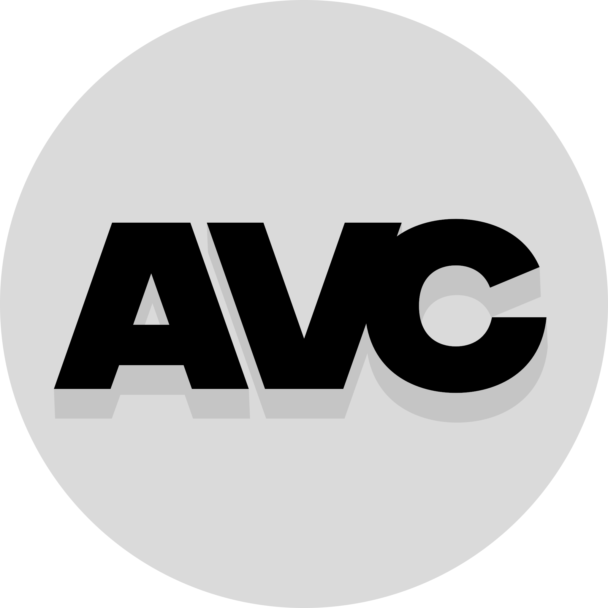

 YT-AVC
Download
How To Use
Downloads!
Get the latest version of YT-AVC!
Download other versions
Version: YT-AVConvert v1.0
Download!
Windows 10/11 x64
Filesize: 96KB (with YT-DLP and FFMPEG 180MB)
Release Date: 2025/03/01
Downloads (all versions)
WHITE TEXT IS THE LATEST VERSION
Version: YT-AVConvert v1.0
Download!
Windows 10/11 x64
Filesize: 96KB (with YT-DLP and FFMPEG 180MB)
Release Date: 2025/03/01
Navigation Menu
YT-AVC Github
YT-DLP
FFMPEG
Main Menu
Downloads
How to use